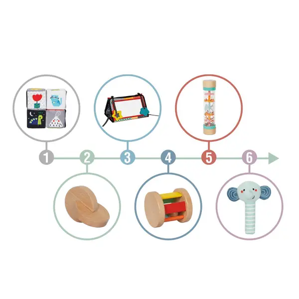
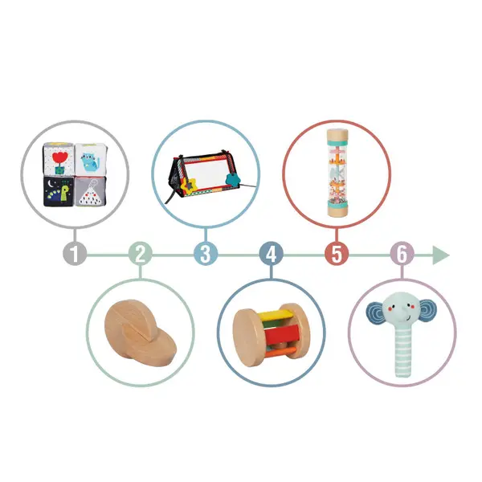

LumiBox: First Year Collection
Thoughtfully designed LumiBox learning kits for babies 0-12 months. Each kit supports key developmental milestones while nurturing natural curiosity.
Kit 1 of 6: First Gazes
First Gazes
"Where curiosity begins"
High-contrast black and white cards capture your newborn's developing vision. Paired with a soft comforter for sensory bonding during the earliest weeks.
 

Tummy Time Discovery
"Building strength through wonder"
A tummy time mirror invites self-discovery while beaded sensory toys encourage reaching and grasping. Making floor time engaging and productive.
Grasp & Spin
"Little hands, big discoveries"
Spinning drums and sensory balls teach cause-and-effect. A baby-safe tissue box satisfies endless pulling curiosity while building hand-eye coordination.
Peek & Find
"Out of sight, not out of mind"
The classic object permanence box introduces a foundational cognitive milestone: understanding that things exist even when hidden. Learning feels like magic.


Stack & Sort
"Order from wonder"
Stacking towers and shape puzzles invite early spatial reasoning. A wooden rattle encourages the pincer grasp that prepares little fingers for fine motor milestones.

Push & Play
"First steps, first adventures"
As your baby approaches their first birthday, push toys support early mobility. Mirror puzzles and cloth books add cognitive depth to active exploration.